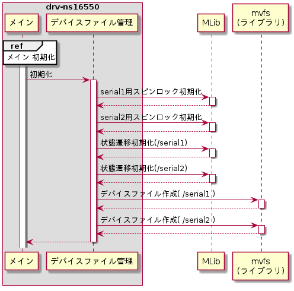
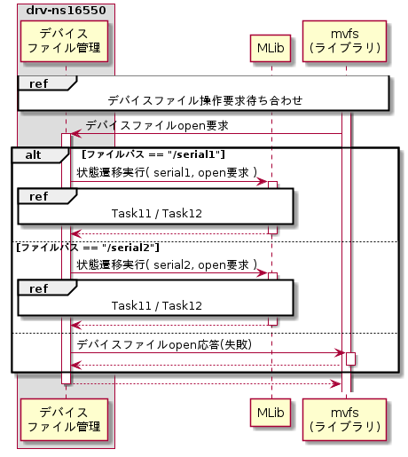
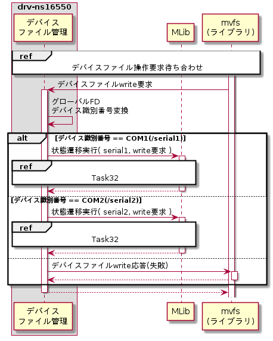
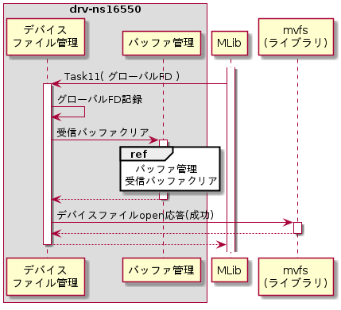
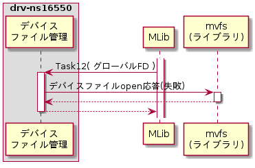
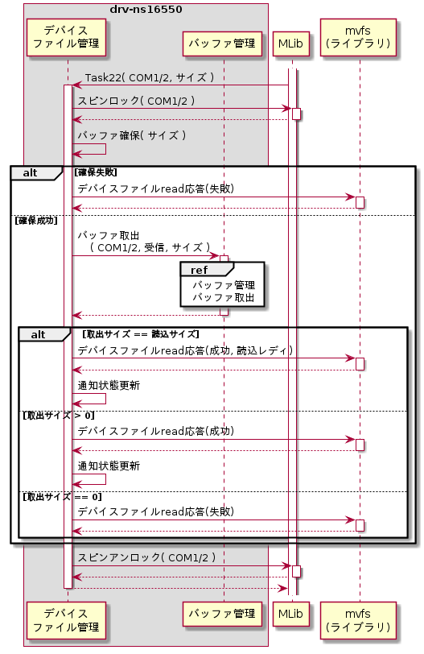
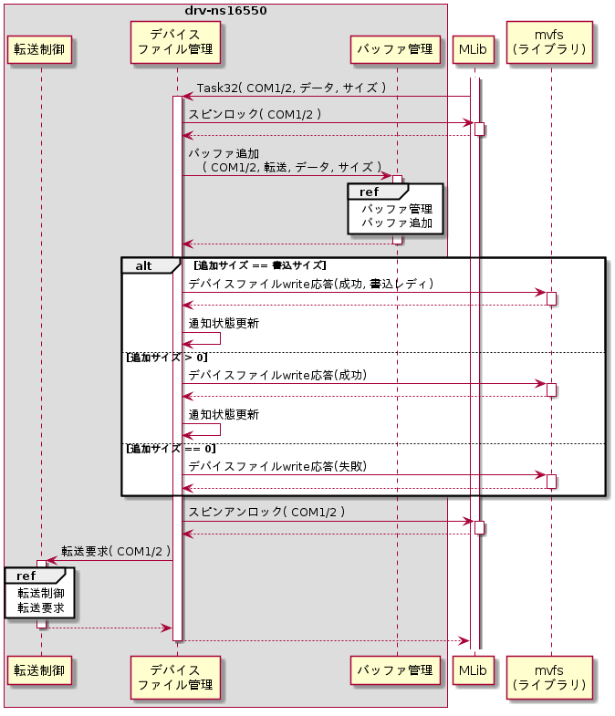
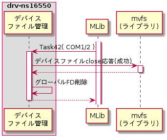
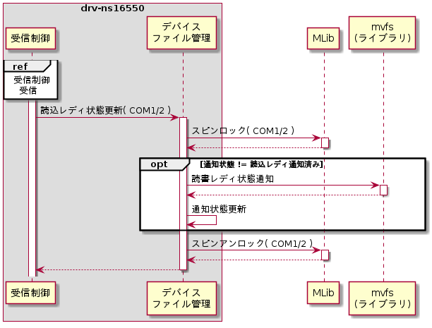
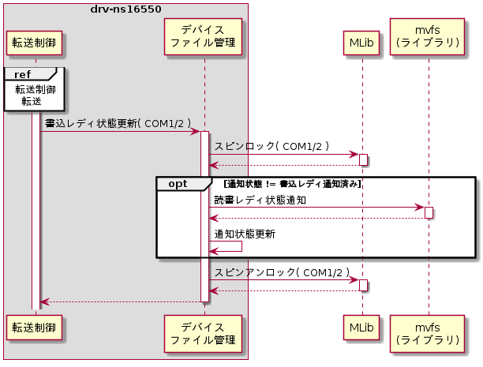

デバイスファイル管理モジュール
デバイスファイル管理モジュールは下記機能を持つ。
初期化
初期化時はデバイスファイル毎の状態を初期化し、デバイスファイルの作成を行う。初期化シーケンスを以下に示す。

スピンロック初期化
メインスレッド上で実行するデバイスファイルread応答およびデバイスファイルwrite応答と、割込み管理スレッド上で実行する読書レディ状態通知を排他制御するために使用するデバイスファイル毎のスピンロックを初期化する。スピンロック初期化はMLibライブラリのMLibSpinInit()を用いる。
状態遷移初期化
デバイスファイル管理モジュールでは状態遷移によって制御を行う。状態遷移はMLibライブラリの状態遷移を用いて制御する。初期化時はMLibライブラリのMLibStateInit()を用いて状態遷移の初期化を行う。設定パラメータを以下に示す。
| # | 引数名 | 設定値 | 備考 | |
| /serial1 | /serial2 | |||
| 1 | *pHandle | 状態遷移ハンドルへのポインタ | ||
| 2 | *pTable | 状態遷移表へのポインタ | 状態遷移表は下記 | |
| 3 | tableSize | 状態遷移表サイズ | sizeofを用いる | |
| 4 | state | 初期状態 | 状態遷移表参照 | |
| 5 | *pErrNo | エラー要因格納先ポインタ | ||
| ＼ | 状態 | 未open状態 (初期状態) |
open中状態 |
| イベント | # | S1 | S2 |
| open要求 | E1 | Task11 →S2 |
Task12 →S2 |
| read要求 | E2 | - | Task22 →S2 |
| write要求 | E3 | - | Task32 →S2 |
| close要求 | E4 | - | Task42 →S1 |
デバイスファイル作成
外部仕様(デバイスファイル作成機能)のデバイスファイル作成を参照のこと。
デバイスファイル操作要求待ち合わせ
初期化完了後にデバイスファイル操作要求の待ち合わせを行う。また、転送制御からの転送要求待ち合わせを行う。
外部仕様(デバイスファイル作成機能)のデバイスファイル操作要求待ち合わせを参照のこと。
状態遷移実行
mvfsからの各種要求と内部モジュールからのメッセージ受信時にイベントとして状態遷移を実行する。状態遷移の実行はMLibライブラリのMLibStateExec()を用いて行う。
デバイスファイルopen要求
デバイスファイルopen要求受信時の処理シーケンスを以下に示す。

デバイスファイルread要求
デバイスファイルread要求受信時の処理シーケンスを以下に示す。
デバイスファイルwrite要求
デバイスファイルwrite要求受信時の処理シーケンスを以下に示す。

デバイスファイルclose要求
デバイスファイルclose要求受信時の処理シーケンスを以下に示す。
状態遷移Task11
状態遷移Task11のシーケンスを以下に示す。

グローバルFD記録
デバイスファイルread要求、デバイスファイルwrite要求、デバイスファイルclose要求がどのデバイスファイルに対しての要求かを識別するために、デバイスファイルopen要求で通知されたグローバルFDをデバイス識別子と紐づけて記録しておく。
受信バッファクリア
デバイスファイルopen以前にデバイスから受信したデータを破棄するために、バッファ管理モジュールの機能を用いて受信バッファをクリアする。
デバイスファイルopen応答
外部仕様(デバイスファイルopen要求処理機能)のデバイスファイルopen応答を参照のこと。
状態遷移Task12
状態遷移Task12のシーケンスを以下に示す。

デバイスファイルopen応答
外部仕様(デバイスファイルopen要求処理機能)のデバイスファイルopen応答を参照のこと。
状態遷移Task22
状態遷移Task22のシーケンスを以下に示す。

スピンロック
割込み管理スレッド上で実施される読書レディ状態通知と排他制御を行うためにスピンロックする。スピンロックはMLibライブラリのMLibSpinLock()を用いる。
バッファ取出
データを応答するために、バッファ管理モジュールのバッファから取り出したデータを一時的に格納しておくバッファ領域を確保し、バッファ管理モジュールの機能を用いて受信バッファからデバイスから受信したデータを取り出す。データ領域の確保は標準ライブラリのmalloc()を用いる。
デバイスファイルread応答
外部仕様(デバイスファイルread要求処理機能)のデバイスファイルread応答を参照のこと。上述のバッファ領域確保に失敗した場合は、読込レディ状態として通知する（バッファ内データが存在しない事に起因するread失敗ではないため）。
通知状態更新
読書レディ状態通知にて不要な通知を行わない様に判定するために、デバイスファイルread応答にて設定した読込レディ状態を記憶しておく。
スピンアンロック
スピンロックをアンロックする。スピンアンロックはMLibライブラリのMLibSpinUnlock()を用いる。
状態遷移Task32
状態遷移Task32のシーケンスを以下に示す。

スピンロック
割込み管理スレッド上で実施される読書レディ状態通知と排他制御を行うためにスピンロックする。スピンロックはMLibライブラリのMLibSpinLock()を用いる。
バッファ追加
データをデバイスに書き込むために、バッファ管理モジュールの機能を用いて転送バッファにデータを追加する。
デバイスファイルwrite応答
外部仕様(デバイスファイルwrite要求処理機能)のデバイスファイルwrite応答を参照のこと。
通知状態更新
読書レディ状態通知にて不要な通知を行わない様に判定するために、デバイスファイルwrite応答にて設定した書込レディ状態を記憶しておく。
スピンアンロック
スピンロックをアンロックする。スピンアンロックはMLibライブラリのMLibSpinUnlock()を用いる。
転送要求
バッファにデータを追加したことを通知するために、転送制御モジュールの転送要求を呼び出す。
状態遷移Task42
状態遷移Task42のシーケンスを以下に示す。

デバイスファイルclose応答
外部仕様(デバイスファイルclose要求処理機能)のデバイスファイルclose応答を参照のこと。
グローバルFD削除
デバイスファイルopen要求時に記録したグローバルFDとデバイス識別子の紐づけを解除する。
読込レディ状態更新
読込レディ状態更新のシーケンスを以下に示す。

スピンロック
メインスレッド上で実行するデバイスファイルread応答とデバイスファイルwrite応答との排他制御を行うため、スピンロックする。スピンロックはMLibライブラリのMLibSpinLock()を用いる。
読書レディ状態通知
読込レディ状態通知が未実施の場合は通知状態に読込レディ状態を加算し読書レディ状態通知を行う。外部仕様(デバイス転送機能)の書込みレディ通知、および、外部仕様(デバイス受信機能)の読込みレディ通知を参照のこと。
通知状態更新
読書レディ状態通知にて通知した状態を更新する。
スピンアンロック
スピンロックをアンロックする。スピンアンロックはMLibライブラリのMLibSpinUnlock()を用いる。
書込レディ状態更新
書込レディ状態更新のシーケンスを以下に示す。

スピンロック
メインスレッド上で実行するデバイスファイルread応答とデバイスファイルwrite応答との排他制御を行うため、スピンロックする。スピンロックはMLibライブラリのMLibSpinLock()を用いる。
読書レディ状態通知
書込レディ状態通知が未実施の場合は通知状態に書込レディ状態を加算し読書レディ状態通知を行う。外部仕様(デバイス転送機能)の書込みレディ通知、および、外部仕様(デバイス受信機能)の読込みレディ通知を参照のこと。
通知状態更新
読書レディ状態通知にて通知した状態を更新する。
スピンアンロック
スピンロックをアンロックする。スピンアンロックはMLibライブラリのMLibSpinUnlock()を用いる。